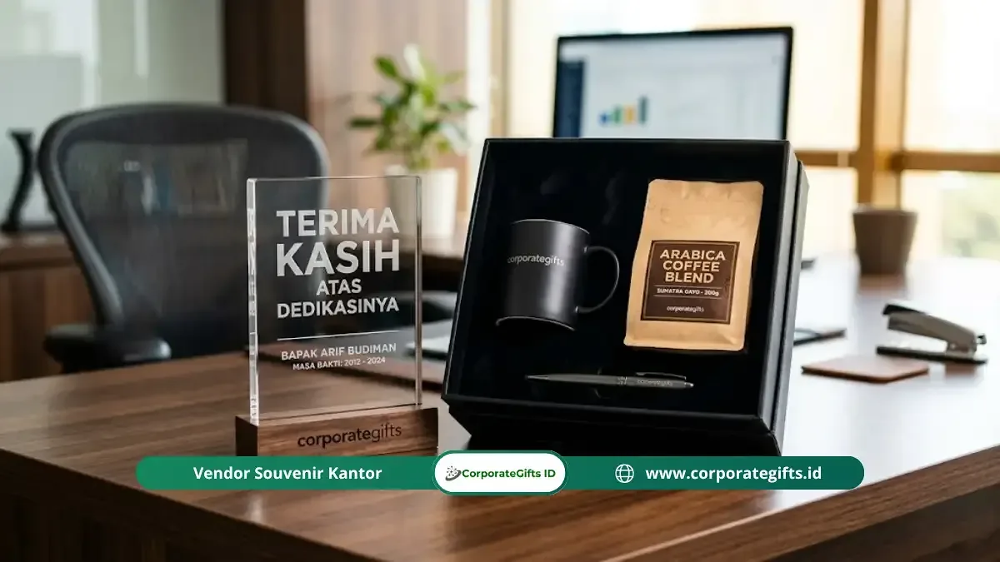

Corporate Gifts ID - Souvenir perpisahan kantor adalah kenang-kenangan resmi atau cinderamata tim yang diserahkan kepada rekan kerja, atasan, atau staf yang mengakhiri masa tugasnya karena pensiun (purnabakti), pengunduran diri (resign), rotasi jabatan internal, maupun mutasi antar-divisi. Hadiah farewell ini terbagi dalam dua kategori utama, yakni cinderamata massal untuk seluruh peserta acara pelepasan dan paket eksklusif perorangan yang dipersonalisasi khusus bagi individu yang berpamitan.
Memberikan cinderamata dalam momen perpisahan bukan sekadar rutinitas formalitas korporat. Berdasarkan survei Promotional Products Association International (PPAI) 2023, sebanyak 83% karyawan yang menerima merchandise bermakna dari tempat kerjanya merasa lebih dihargai dan memiliki persepsi positif yang bertahan lama terhadap mantan perusahaannya. Kenang-kenangan yang berkesan merupakan investasi nyata dalam memperkuat employer branding dan membangun jaringan alumni profesional yang solid.
Poin Kunci Pengadaan Souvenir Perpisahan Kantor:
- Segmentasi Jelas: Bedakan kebutuhan hadiah utama perorangan (plakat/hamper mewah) dengan souvenir hadirin massal (tumbler/tote bag).
- Personalisasi Emosional: Sertakan ukiran nama, jabatan, masa bakti, atau pesan hangat dari rekan satu tim kerja.
- Prioritaskan Nilai Fungsional: Pilih barang yang dapat digunakan dalam rutinitas sehari-hari atau babak karier berikutnya.
- Waktu Pemesanan Ideal: Lakukan konsultasi dan approval mockup minimal 7 hingga 14 hari sebelum hari H seremoni.
Apa Itu Souvenir Perpisahan Kantor?
Souvenir perpisahan kantor adalah simbol penutup sebuah babak dalam hubungan kerja profesional. Berbeda dengan bingkisan ulang tahun atau parcel hari raya yang bersifat musiman, hadiah perpisahan memiliki bobot sentimental yang mendalam karena menandai transisi perjalanan karier seseorang.
Melalui cinderamata yang dirancang dengan apik, manajemen dan rekan kerja menyampaikan pesan terima kasih atas kontribusi, loyalitas, dan dedikasi yang telah dicurahkan selama masa pengabdian di institusi tersebut.
Momen Tepat Pemberian Hadiah Farewell Kantor
Pemberian cinderamata perpisahan biasanya dilangsungkan dalam berbagai momentum resmi maupun kekeluargaan di lingkungan kantor:
- Seremoni Pelepasan Purna Tugas (Pensiun): Acara formal penghargaan bagi karyawan senior atau pejabat dewan direksi yang memasuki masa purnabakti.
- Farewell Gathering Rekan Kerja: Acara santai tim internal untuk melepas rekan kerja yang berpindah ke perusahaan baru atau melanjutkan studi akademik.
- Seremoni Rotasi dan Promosi Jabatan: Penyerahan tanda apresiasi saat seorang manajer divisi berpindah ke kantor cabang lain.
- Penutupan Proyek Jangka Panjang (Project Milestone): Pembubaran satgas atau tim lintas divisi yang telah menyelesaikan target proyek strategis bersama.

Kombinasi paket gift set perpisahan perorangan berbalut hardbox eksklusif dengan sentuhan grafir laser nama personal.
Perbedaan Format Souvenir Massal vs Perorangan
Menentukan format penerima sejak awal akan mempermudah alokasi dana dan pemilihan vendor:
1. Souvenir Acara Massal (Untuk Seluruh Undangan)
Ditujukan bagi seluruh peserta yang hadir dalam acara seremoni pelepasan divisi besar atau perpisahan direktur utama. Fokus utamanya adalah efisiensi biaya per unit, keseragaman desain, dan fungsi harian. Contoh produk meliputi tumbler stainless custom logo, tote bag kanvas, dan buku agenda notes.
2. Souvenir Perorangan (Untuk Individu yang Berpamitan)
Diberikan secara khusus hanya kepada 1 atau 2 orang yang purna tugas. Tingkat personalisasi sangat tinggi, mencakup grafir nama lengkap beserta gelar, rentang tahun masa kerja, dan logo korporat. Contoh produk meliputi plakat kristal optik 3D, jam meja kayu jati ukir, serta paket executive gift set hardbox.
Rekomendasi Produk Souvenir Perpisahan Populer 2026
Berikut pilihan produk unggulan dari katalog souvenir kantor CorporateGifts.ID yang paling diminati instansi korporat di Indonesia:
Kategori Hadiah Perorangan Eksklusif
- Plakat Penghargaan Kayu & Kristal: Pilihan paling formal untuk karyawan yang pensiun, memuat ukiran data masa bakti dan ucapan apresiasi dari dewan komisaris.
- Jam Meja atau Jam Dinding Eksklusif: Simbol filosofis atas waktu dan dedikasi berharga yang telah disumbangkan bagi kemajuan perusahaan.
- Executive Hamper Gift Set: Kotak kado rigid magnetik berisi perpaduan tumbler SUS 304, wireless charger meja, dan pulpen metal premium.
- Buku Kenangan Tim (Memory Photobook): Kompilasi foto perjalanan kerja, pesan kesan, dan tanda tangan seluruh rekan divisi yang bernilai sentimental tak ternilai.
Kategori Cinderamata Massal Hadirin
- Tumbler Stainless Steel Vacuum: Media promosi berjalan yang sangat fungsional dan mendukung gaya hidup ramah lingkungan.
- Tote Bag Kanvas Tebal: Praktis digunakan saat bepergian atau berbelanja, memberikan kesan santai namun tetap elegan.
- Set Alat Tulis & Pulpen Metal: Pulpen eksklusif custom logo dalam gift box ramping memberikan kesan profesional yang terukur.
- Buku Agenda Hardcover PU Leather: Buku catatan bersampul kulit sintetis dengan teknik deboss logo instansi.
Tabel Matriks Rekomendasi & Anggaran Farewell Gift
Berikut panduan matriks estimasi biaya dan kurasi produk berdasarkan kategori acara perpisahan di lingkungan kerja:
| Kategori Acara | Estimasi Anggaran | Rekomendasi Cinderamata | Tipe Personalisasi | Target Penerima |
|---|---|---|---|---|
| Perpisahan Rekan Tim (Resign) | Rp100.000 - Rp250.000 | Tumbler SUS 304 + Notebook Kulit + Mug | Grafir Nama & Kartu Ucapan Tim | Rekan Kerja Se-Divisi |
| Rotasi / Mutasi Pimpinan Cabang | Rp250.000 - Rp600.000 | Executive Gift Set Hardbox + Powerbank | Gold Foil Stamping & Laser Engraving | Manager / Kepala Divisi |
| Pelepasan Purnabakti (Pensiun) | Rp500.000 - Rp1.500.000+ | Plakat Kristal Kayu 3D + Jam Meja Mewah | Ukiran Logam Kuningan & Riwayat Bakti | Karyawan Senior / Direksi |
| Hadirin Acara Farewell Massal | Rp45.000 - Rp120.000 | Tote Bag Kanvas + Pulpen Metal + Notes | Sablon Digital Logo Acara / Perusahaan | Seluruh Karyawan Peserta |
5 Kesalahan Umum dalam Memilih Souvenir Perpisahan
Hindari beberapa kekeliruan berikut agar hadiah perpisahan yang Anda siapkan memberikan kesan positif maksimal:
- Memesan Terlalu Mepet dengan Hari H: Proses kustomisasi grafir nama dan pembuatan plakat membutuhkan waktu 7 hingga 14 hari kerja. Pemesanan mendadak berisiko menurunkan standar kerapian cetak.
- Mengabaikan Nilai Guna Sehari-hari: Barang yang hanya menjadi pajangan tanpa fungsi nyata cenderung cepat tersimpan di gudang atau terlupakan.
- Tidak Meminta Sampel Proofing Fisik: Untuk pemesanan massal ratusan unit, selalu minta approval mockup digital atau sampel nyata sebelum produksi penuh.
- Melupakan Personalisasi Data: Hadiah perpisahan tanpa nama penerima atau tanggal masa bakti akan kehilangan nilai emosionalnya.
- Kemasan Pembungkus yang Seadanya: Hadiah bernilai tinggi akan terlihat kurang berkesan jika dibungkus dengan kantong plastik biasa. Gunakan hardbox magnetik atau tas spunbond eksklusif.
Alur Pemesanan Cinderamata Kantor yang Efisien
Untuk memastikan proses pengadaan berjalan lancar, ikuti tahapan taktis berikut:
- Tahap 1 - Pemetaan Kebutuhan: Tentukan jumlah penerima utama dan peserta hadirin, tanggal pasti seremoni, serta pagu anggaran yang disetujui divisi.
- Tahap 2 - Konsultasi Kurasi Produk: Diskusikan pilihan gift set yang paling selaras dengan identitas korporat bersama konsultan CorporateGifts.ID.
- Tahap 3 - Approval Desain Mockup 3D: Tim desainer kami menyiapkan visual preview tata letak logo, font nama penerima, dan pesan kenang-kenangan.
- Tahap 4 - Produksi & Quality Control: Proses pembuatan berjalan dengan standar pengawasan mutu yang ketat pada setiap unit produk.
- Tahap 5 - Pengiriman Tepat Waktu: Paket diantar langsung ke gedung kantor Anda lengkap dengan dokumen administrasi B2B resmi.
Pertanyaan Seputar Souvenir Perpisahan Kantor (FAQ)
Kesimpulan dan Konsultasi di CorporateGifts.ID
Souvenir perpisahan kantor adalah wujud nyata apresiasi atas jalinan kerja sama dan dedikasi yang telah terbangun. Hadiah yang dipilih dengan pertimbangan matang akan memastikan momen perpisahan dikenang dengan penuh rasa hormat dan kehangatan.
Siapkan cinderamata perpisahan kantor yang berkesan bersama CorporateGifts.ID. Temukan puluhan pilihan gift set dan souvenir siap custom di katalog produk kami atau mintalah penawaran resmi melalui formulir permintaan penawaran harga sekarang juga.
Disclaimer: Estimasi biaya dan variasi item souvenir perpisahan dapat disesuaikan secara fleksibel dengan anggaran instansi atau kebutuhan divisi Anda melalui tim konsultan CorporateGifts.ID.